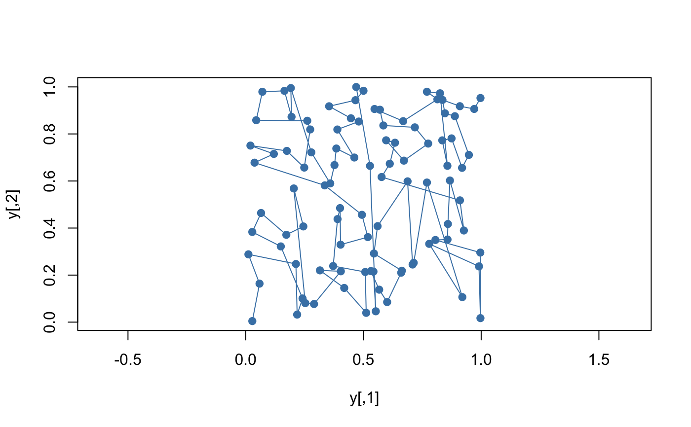

Sort multidimensional data
kd_sort(x, ...)
# S3 method for arrayvec
kd_sort(x, inplace = FALSE, parallel = TRUE, ...)
# S3 method for matrix
kd_sort(x, cols = NULL, parallel = TRUE, ...)
# S3 method for data.frame
kd_sort(x, cols = NULL, parallel = TRUE, ...)
kd_order(x, ...)
# S3 method for arrayvec
kd_order(x, inplace = FALSE, parallel = TRUE, ...)
# S3 method for matrix
kd_order(x, cols = NULL, parallel = TRUE, ...)
# S3 method for data.frame
kd_order(x, cols = NULL, parallel = TRUE, ...)
# S3 method for sf
kd_order(x, cols = NULL, parallel = TRUE, ...)
kd_is_sorted(x, ...)a matrix or arrayvec object
ignored
sort as a side-effect if true
use multiple threads if true
integer or character vector or formula indicating columns
kd_sort | the table sorted in kd-tree order |
kd_order | a permutation vector |
kd_is_sorted | a boolean |
The algorithm used is a divide-and-conquer quicksort variant that recursively partitions an range of tuples using the median of each successive dimension. Ties are resolved by cycling over successive dimensions. The result is an ordering of tuples matching their order if they were inserted into a kd-tree.
kd_order returns permutation vector that will order the rows of the
original matrix, exactly as order. If inplace is true,
then kd_order will also sort the arrayvec object as a side effect.
This can be more efficient when many subsequent queries are required.
kd_sort and kd_order have been extended to work directly on R
native data.frame and matrix types. All vector column types are supported
(even lists of objects as long as equality and comparison operators are
defined). Additional, the user can specify a sequence of column indices
that will be used for sorting. These can be a subset of columns and given
in any order.
kd_sort and kd_order work differently on spatial sf
types. If no sort columns are specified, then the spatial coordinates are sorted.
Otherwise, the coordinates are ignored and the specified columns are used.
if (has_cxx17()) {
z <- data.frame(real = runif(10), lgl = runif(10) > 0.5,
int = as.integer(rpois(10, 2)), char = sample(month.name, 10),
stringsAsFactors = FALSE)
kd_sort(z)
x <- matrix(runif(200), 100)
y <- kd_sort(x)
kd_is_sorted(y)
kd_order(x)
plot(y, type = "o", pch = 19, col = "steelblue", asp = 1)
}
